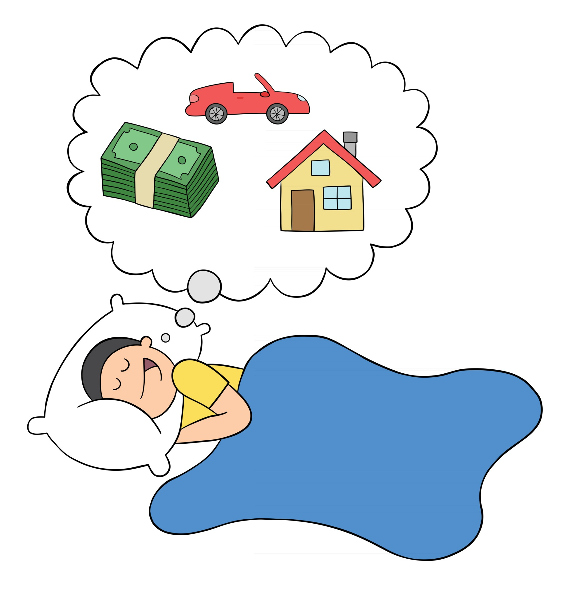

Lesson: Earn Money While Sleeping

What's Passive Income?
Passive income refers to money earned with minimal effort or active involvement once the initial work has been completed. Unlike traditional employment, where you exchange time for money (active income), passive income allows you to make money consistently with little day-to-day management. There are many forms of passive income, but they generally involve some upfront investment of time, money, or effort to create a system that generates regular income without ongoing work.
Key Features of Passive Income

- Minimal Ongoing Effort: After the initial setup, passive income streams require little to no daily management.
- Upfront Investment: You typically need to invest time, money, or skills upfront to build the income-generating asset.
- Scalability: Some passive income streams have the potential to scale, earning more money without significantly increasing effort.
- Consistency: Once established, passive income streams can generate consistent, recurring revenue.
Ways to Earn Passive Income
1.Content Creation:
 You produce videos, write blogs, or record podcasts that generate ad revenue or sponsorship income long after the content is published. Bring your creativity to life and earn consistent passive income.
You produce videos, write blogs, or record podcasts that generate ad revenue or sponsorship income long after the content is published. Bring your creativity to life and earn consistent passive income.
- YouTube: By creating engaging content, you can earn money through ad revenue, sponsored videos, affiliate marketing, and merchandise sales. Once your videos are published, they continue generating views and ad revenue passively. Start your journey today at YouTube.
- TikTok: Similar to YouTube, TikTok offers creators the ability to earn through brand deals, sponsorships, and even the Creator Fund for popular influencers. Create an account at TikTok and get started.
- Blogging: Writing blog posts allows you to earn money through ads (Google AdSense), affiliate marketing, sponsored content, or even selling digital products like eBooks or courses. Once the content is created and optimized for SEO, it can generate traffic and revenue over time. Try these blog posting websites WordPress, Medium, SubStack, Blogger, Hubpages, Linkedin Articles and many more.
- Podcasts: Once your podcast gains an audience, you can earn passive income through ads, sponsorships, and partnerships.
2. Affiliate Marketing:
Affiliate marketing involves promoting other companies' products or services and earning a commission for each sale made through your referral. This can be done via blogs, YouTube channels, social media platforms, or websites. You create content once and continue to earn passive income as long as people are clicking and purchasing through your links.
3. Invest in Dividend-Paying Shares or Savings Bank Account:
When you invest in shares that pay dividends, you not only can benefit from the rising stock price, but also you receive regular payments a.k.a dividends without having to sell your shares. While not the most lucrative, keeping your money in a high-yield savings account or Certificate of Deposit (CD) allows you to earn interest without doing anything. These are low-risk ways to generate passive income, especially for those who prefer safer investment options. Refer Investing section to learn about how to identify which stocks to invest in and risks and benefits of different approaches.
4. Sell Digital Products:
 Creating digital products that people can download or access on demand is another way to generate passive income:
Creating digital products that people can download or access on demand is another way to generate passive income:
- E-books: Write an e-book on a topic you're knowledgeable about and sell it through Amazon Kindle, your blog, or other platforms.
- Online Courses: Platforms like Udemy, Teachable, and Skillshare allow you to create and sell courses on topics you’re an expert in.
- Stock Photography or Art: If you’re a photographer or digital artist, you can sell your work on sites like Shutterstock, Adobe Stock, or Etsy.
5. Automated Online Business:
 Research the software or app market and figure out which digital software or app you could build with minimal efforts and customers will be willing to pay for. Either you could write the software yourself or hire professionals to do it. Building such a Software as a Service (SaaS) business or apps allows you to create a subscription-based digital service, on websites or platforms like Google Play or Apple App Store, where users pay monthly, annually or as they use the service. After the initial development, it can provide a steady stream of income, especially if the platform runs with minimal intervention.
Research the software or app market and figure out which digital software or app you could build with minimal efforts and customers will be willing to pay for. Either you could write the software yourself or hire professionals to do it. Building such a Software as a Service (SaaS) business or apps allows you to create a subscription-based digital service, on websites or platforms like Google Play or Apple App Store, where users pay monthly, annually or as they use the service. After the initial development, it can provide a steady stream of income, especially if the platform runs with minimal intervention.
6. Renting Out Assets:
Creating digital products that people can download or access on demand is another way to generate passive income:
- Vehicle or Equipment: Platforms like Turo allow you to rent out your car, while others like Fat Llama let you rent out equipment such as cameras or drones.
- Spare Room or House (Airbnb): Renting out extra space through Airbnb can generate passive income when you’re not using it. Even renting out a storage space or parking spot can bring in extra cash.
7. Real Estate Investments:
- Rental Properties: Purchasing property and renting it out can provide a steady stream of passive income. While managing tenants may require some effort, hiring a property management company can reduce the workload, making it more passive.
- Real Estate Investment Trusts (REITs): For those who want exposure to real estate without owning physical property, REITs allow you to invest in real estate portfolios that generate income through property ownership and rent collection. REITs pay regular dividends to investors.
Let's Practice What You Learned!
Go Back!